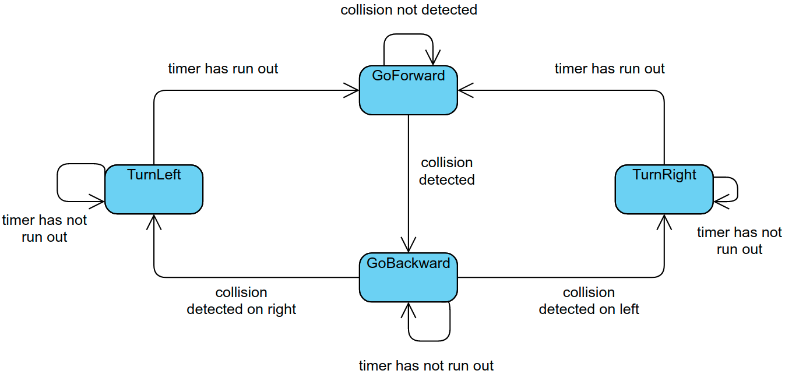
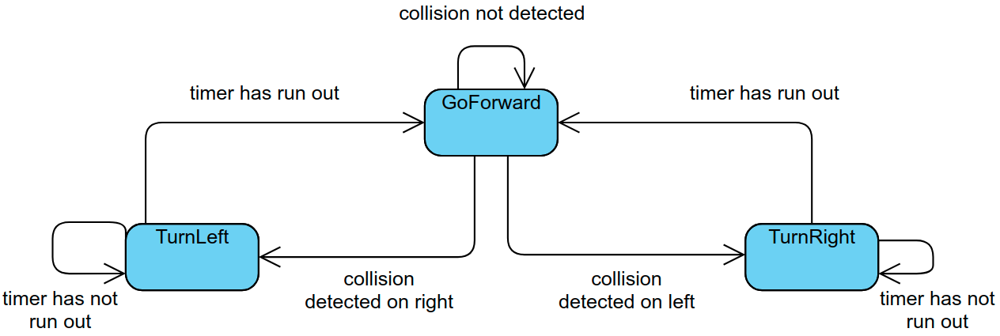
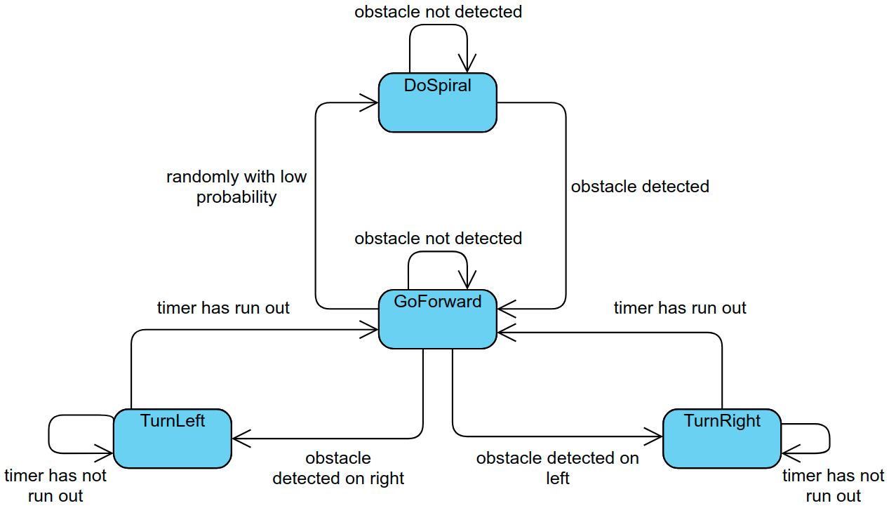

First approach
First I decided to use the bumper, and came with the following FSM:
Using the laser
When testing the design, I realised that the methods to access the bumper state were giving me problems, so I started using the laser. Since there was no physical contact anymore, the GoBackward state was no longer needed, so I removed it.
The timers are chosen randomly, and variations of the range yields different results. For example, at first I thought that the best way to do it was to set short timers, so that the robot would stick to the walls. There were one problem: when it entered a room, it could not get out. The following video shows the problem:
To solve this, I put larger ranges for the timers. I also changed the probability distribution, slightly favoring smaller timers(i.e. smaller turns) to favor the current direction of movement, without losing the possibility of making bigger turns.
By that time, I also added the DoSpiral state:
DoSpiral activates with a certain probability, currently at 1%.
Final version demo
Here is a timelapse of a ~15 min attempt:
(due to a bug in the platform, the evaluator stops when a dialogue pops up, so i cannot test it for extended periods of time)